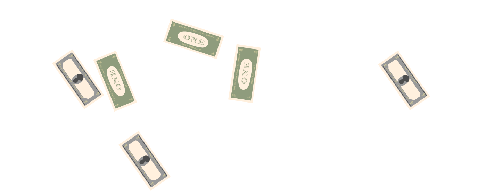
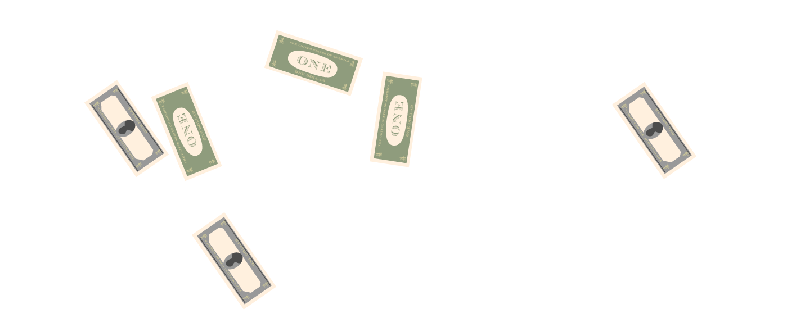

Started from
The Bottom
Started from
The Bottom

The undeniable adorable small child Aubrey Drake Graham was born on October 24, in Toronto Ontario to a mother who was a teacher, and a musiscian father.
At five years old, Aubrey's parents divorce and he is raised on Weston Road until he and his mother moved to the affluent Forest Hill area of Toronto. Contrary to popular belief, he lived in only half of a modest house in the neighbourhood. "It was not big, it was not luxurious. It was what we could afford."
Young Aubrey Graham Drake is enrolled in hockey by mom. He assumes the position of Right Wing playing for the Weston Red Wings.
Since he was a fast little guy, he eventually made it all the way to the Upper Canada College hockey camp where he got cross checked in the neck, forcing mom to pull him from the sport. It seems young Aubrey just wasn't meant to be a wingman.

Aubrey has his Bar mitvah. There are few details of the ceremony, however a clip of young Aubrey dancing taken from VHS footage is used as the intro for the music video "HYFR" directed by Director X. This video is also Bar Mitvah themed and features Lil Wayne, OB O'Brien (Drake's friend from Hamilton), and Trey Songz. Director X described the shoot as "bat-shit crazy"
When he was 15, Aubrey met a nice man who volunteered to help him get into acting. This meeting led to Aubrey playing a role on the hit Canadian Series "Degrassi: The Next Generation". He played the role of a basketball star who was physically disabled after being shot by a classmate. The character was named "Jimmy Brooks". He appeared on a total of 138 episodes.
The original Degrassi Junior High series aired in 1987 on CBC and was one of the first television series to deal with hard issues such as homophobia, homosexuality, AIDS, drug addiction, teen pregnancy, violence, racism and eating disorders (to name a few). The original series has also been our go-to reference for incredible 80's teen fashion.
Room for Improvement, Aubrey's first mixtape was self-released in 2006. It features rap artists Trey Songz and Lupe Fiasco however had no well known producers on the album.
"It's like...the guy you'd never wanna hear rap in your life. The Canadian Jewish child actor."
The son of Rap-A-Lot founder, Jas Prince introduced Lil Wayne to Drake's music. Lil Wayne mistakenly thought Drake's name was actually "Drizzy" because his email address at the time was "drizzydrake@rogers.ca". In 2012 there was a lawsuit regarding the possibility of money owed to Jas Prince in exchange for his introduction.
"Another day, another dollar" thought Aubrey (probably) as he prepared for another day on set at hit Canadian television show "Degrassi: Next Generation". However, when he arrived onset, he found his dressing room door locked and a new, younger generation of actors auditioning for the show. He was fired.
In 2009, an unauthorized album entitled "The Ladies Love Drake" (which has nothing to do with Drake) and was credited to rapper Drake went up for sale on iTunes. A lawsuit is pending against the label. We still think they have really great graphic designers.
In May 2009, Drake appeared on Hot97 to freestyle. However, video footage reveals that Drake was actually 'freestyling' by reading off of his BlackBerry mobile device. (blackberry with a sidescroll)
On June 29, 2009 Aubrey signed a deal with Cash Money / Universal / Motown. It was "one of the biggest bidding wars ever" apparently. He reportedly received $2million upfront and only pays 25% of his sales as a distribution fee.
Drake's OVO and Canada Goose collaborate on a high-fashion bomber parka. The bomber was only sold at 8 retail locations and only 300 were produced for sale. He gave 100 to his friends. Rapping fans and fashionistas around the world lined up to purchase this jacket for $900 (which is actually the average price of any Canada Goose jacket). At Nomad in Toronto (back when it was at the legendary 431 Richmond building), the jacket sold out in a matter of days.
The parka was also sold at Opening Ceremony in Los Angeles, but we're not sure why anyone would want a parka in LA.
In 2010, Drake attends a Kentucky WIldcats game. They won so naturally Drake high fived several coaches and hugged fellow Wildcats super fan and actress Ashley Judd. “I’m just a natural fan. I love the team”. He was also gifted with a championship ring for his dedication and love for the team.
In 2011, an unnamed rap fan with shaved eyebrows visited a tattoo parlour in LA and had artist Kevin Campbell tattoo the word DRAKE on her forehead. He assumed it was a gang-related tattoo. While Drake praises the woman to the press, he threatens to "Fuck up" Kevin, the tattoo artist.
In August, Drake announced a posthumous collaboration with Aaliyah who sadly passed in 2001.Even though he received approval from Aaliyah's cousin and uncle, longtime Aaliyah collaborator Timbaland had been critical of the project along with DMX and a host of others while Lil Wayne referred to the project as "an awesome collaboration."
 

Aubrey and his crew visited 'Cameo Nightclub' in Charlotte, NC (Yelp rating 1.5 stars) with a cardboard box filled with $50,000 in one dollar bills. The friends proceeded to open the box and toss the dollar bills in the air in every direction all around the the nightclub until the floor was literally covered in money. They made it rain.
A rapper who goes by the name 'Bleu Davinci' contributed $25,000 to the box, but we have no idea who he is.
After the Miami Heat won the NBA championship, Drake eagerly heads to the locker room to join his team in celebrations where he is denied entry by security guard. But, it was all a hilarious joke that Drake was playing on everyone. Since he wasn’t allowed in the locker room, he met up with the team later for pizza.
During an interview, Johnny Menziel was asked what the 'coolest' moment of his offseason was. His eyes lit up. He knew the answer wgithout even thinking about it: Drake. They met during Johnny Manziel's offseason and the pair were inseparable during his time in Toronto. Johnny got to see how Drake makes his music behind-the-scenes and got some sage advice from Drake that changed his life. Menziel then quickly got an 'OVO' tattoo and frequently flashes various OVO signs with his hands while playing.
Sports team, Toronto Raptors recently announced that he would be the "Global Ambassador" for the team. Though exact details of the duties and responsibilities in the job description are unclear, it is to be assumed that the position does involve attending games on specified "Drake nights", giving away t-shirts, DJing and announcing players as well as communicating with Time Leiweke and Masai Ujiiji on Drake Night and Toronto Raptors related subjects.
While he has a bright future as a rap artist, Drake truly shines when he is pursuing his passion, sports. Drake makes yet another big career move as he is named the official host of the ESPYS (which is ESPN's sporting award show, apparently).
"This is an incredible opportunity for me to combine two of my biggest passions - sports and performing,"
While he has a bright future as a rap artist, Drake truly shines when he is pursuing his passion, sports. Drake makes yet another big career move as he is named the official host of the ESPYS (which is ESPN's sporting award show, apparently).